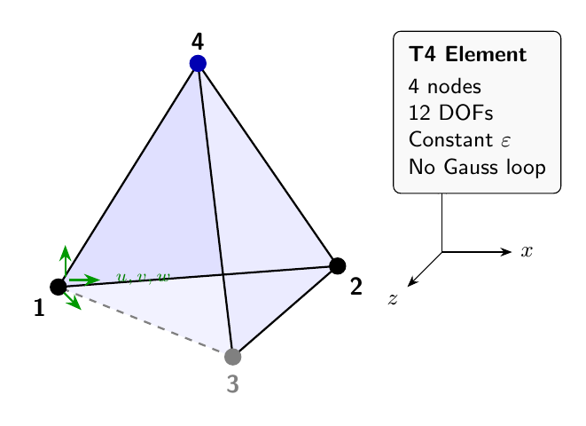

3D Solid Elements: Tetrahedrons and Hexahedrons#
This chapter derives the mathematics behind the 3D solid elements in femlabpy.elements.solids. We begin with the fundamental strain-displacement relations in three dimensions, then specialize to the 4-node tetrahedron (T4) and 8-node hexahedron (H8).
Preliminaries: 3D Elasticity#
Strain tensor#
For a displacement field \(\mathbf{u} = [u, v, w]^T\) in three dimensions, the infinitesimal strain tensor under small deformation assumptions is:
Expanding this in Cartesian coordinates yields six independent strain components. Using Voigt notation, we arrange them as:
Constitutive relation#
For isotropic linear elasticity, the stress-strain relation is:
where the \(6 \times 6\) elasticity matrix \(\mathbf{D}\) is:
This matrix is implemented in _elastic3d_matrix(Ge) where Ge = [E, nu].
1. The 4-Node Tetrahedron Element (T4)#
{kind=link}

Figure 6.1: 4-node tetrahedron (T4) element with 3 translational DOFs per node. Dashed edge indicates hidden line.#
The T4 element has 4 nodes with 3 DOFs each, giving 12 element DOFs total. The topology row is [n1, n2, n3, n4, mat_id].
1.1 Shape functions#
The T4 uses volume (barycentric) coordinates \(L_1, L_2, L_3, L_4\) as shape functions. For a point \(\mathbf{x}\) inside the tetrahedron with vertices \(\mathbf{x}_1, \mathbf{x}_2, \mathbf{x}_3, \mathbf{x}_4\):
where \(V\) is the total volume and \(V_i\) is the volume of the sub-tetrahedron formed by replacing vertex \(i\) with point \(\mathbf{x}\).
The volume of a tetrahedron with vertices at \(\mathbf{x}_1, \mathbf{x}_2, \mathbf{x}_3, \mathbf{x}_4\) is:
Since \(L_1 + L_2 + L_3 + L_4 = 1\), we can parameterize with three independent coordinates. The parent-space derivatives are constant:
1.2 Jacobian and physical derivatives#
The Jacobian matrix maps parent coordinates to physical coordinates:
where \(\mathbf{X}_e\) is the \(4 \times 3\) nodal coordinate matrix. The physical-space shape function derivatives are:
In code, this is computed via np.linalg.solve(J, dN) to avoid explicit inversion.
1.3 Strain-displacement matrix#
For 3D solids, the element displacement vector is:
The \(6 \times 12\) strain-displacement matrix \(\mathbf{B}\) relates strain to nodal displacements:
For node \(i\) with shape function derivatives \(\frac{\partial N_i}{\partial x}, \frac{\partial N_i}{\partial y}, \frac{\partial N_i}{\partial z}\), the contribution to \(\mathbf{B}\) is:
The full matrix is \(\mathbf{B} = [\mathbf{B}_1 | \mathbf{B}_2 | \mathbf{B}_3 | \mathbf{B}_4]\).
1.4 Element stiffness matrix#
The element stiffness matrix is derived from the principle of virtual work. The strain energy is:
Substituting \(\boldsymbol{\varepsilon} = \mathbf{B} \mathbf{u}^e\):
Since \(\mathbf{B}\) and \(\mathbf{D}\) are constant over the T4 element, the integral simplifies:
In code, the factor appears as 2.0 * det(J) due to the reference tetrahedron mapping convention.
1.5 Internal force vector#
For a given displacement \(\mathbf{u}^e\), the internal force vector is:
With constant strain:
2. The 8-Node Hexahedron Element (H8)#
The H8 element is the trilinear brick with 8 nodes and 24 DOFs.Unlike T4, the strain field varies within the element, requiring numerical integration.
2.1 Trilinear shape functions#
The parent domain is the cube \([-1,1]^3\) with natural coordinates \((\xi, \eta, \zeta)\). The eight shape functions are tensor products of 1D linear functions:
where \((\xi_i, \eta_i, \zeta_i)\) are the corner coordinates of node \(i\):
Node |
\(\xi_i\) |
\(\eta_i\) |
\(\zeta_i\) |
|---|---|---|---|
1 |
-1 |
-1 |
-1 |
2 |
+1 |
-1 |
-1 |
3 |
+1 |
+1 |
-1 |
4 |
-1 |
+1 |
-1 |
5 |
-1 |
-1 |
+1 |
6 |
+1 |
-1 |
+1 |
7 |
+1 |
+1 |
+1 |
8 |
-1 |
+1 |
+1 |
2.2 Shape function derivatives#
The parent-space derivatives are:
These vary with position, unlike T4.
2.3 Isoparametric mapping#
Physical coordinates are interpolated from nodal coordinates:
The Jacobian matrix at each point is:
Physical derivatives are obtained by solving:
2.4 Gauss-Legendre integration#
Since the integrand varies within the element, we use numerical quadrature:
The \(2 \times 2 \times 2\) Gauss rule uses 8 points at \(\xi, \eta, \zeta = \pm 1/\sqrt{3}\) with unit weights:
For the standard 2-point rule, \(w_g = 1\) for all points.
2.5 Stiffness matrix computation#
At each Gauss point \(g\):
Evaluate parent derivatives \(\frac{\partial \mathbf{N}}{\partial \boldsymbol{\xi}}\big|_g\)
Compute Jacobian \(\mathbf{J}_g = \frac{\partial \mathbf{N}}{\partial \boldsymbol{\xi}}\big|_g \cdot \mathbf{X}_e\)
Solve for physical derivatives \(\frac{\partial \mathbf{N}}{\partial \mathbf{x}}\big|_g = \mathbf{J}_g^{-1} \frac{\partial \mathbf{N}}{\partial \boldsymbol{\xi}}\big|_g\)
Build \(\mathbf{B}_g\) from the physical derivatives
Accumulate \(\mathbf{K}^e \mathrel{+}= \mathbf{B}_g^T \mathbf{D} \mathbf{B}_g \cdot |\det(\mathbf{J}_g)|\)
In code, this is vectorized using np.einsum over all Gauss points simultaneously.
2.6 Stress recovery#
At each Gauss point, strain and stress are:
The internal force vector is assembled as:
3. Implementation Notes#
Code structure#
Function |
Description |
|---|---|
|
T4 element stiffness (single element) |
|
T4 internal force and stress recovery |
|
T4 batch assembly to global stiffness |
|
T4 batch internal force assembly |
|
H8 element stiffness (single element) |
|
H8 internal force and stress recovery |
|
H8 batch assembly to global stiffness |
|
H8 batch internal force assembly |
Design principles#
No cached state: Every call recomputes geometry from
Xeand material fromGeVectorized loops: Batch routines use
np.einsuminstead of Python loopsExplicit indexing: DOF scatter uses
element_dof_indicesplusnp.add.at